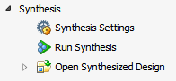

Synthesized Design 環境では、合成後のネットリスト ファイルとデザイン制約をターゲット パーツのデバイス リソースとリンクして、インメモリの合成済みデザインを作成します。
Synthesized Design 環境は、合成済みデザインを開いた状態で Flow Navigator の [Synthesis] をクリックするとアクティブにできます。
|
合成済みデザイン環境からは、次が実行できます。
|
 |
関連項目
 |
Vivado デザイン ハブ - 合成 |
 |
Vivado Design Suite QuickTake ビデオ : デザインの合成 |